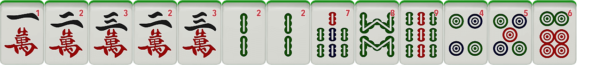
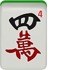
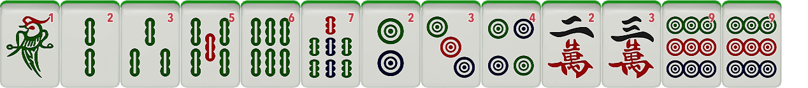
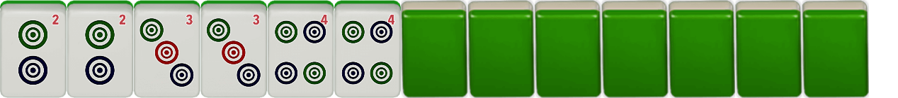

Whether you're a beginner to riichi mahjong, or a former player getting back into the game, you need to know your winning hands, and how many points you will be cashing from yaku. If this sounds like you, you've come to the right place.
Riichi is a mahjong player's most useful tool. If you have 3 calls and an eye, or 4 calls and no eye, you may call riichi, so that when you either draw the last tile or someone else drops it, you can win and score yaku. Note that you must have at least 1000 points to call riichi.


In this example, you draw a 4 of characters on your turn with this hand. Since you have accomplished the minimum requirement of 4 valid calls and an eyes, you have achieved Menzinchin Tsumo by drawing into your winning tile in a closed hand.
You gain this yaku by winning in the next 4 turns after you declare riichi, including your next turn. You may win by another player's discard or by your next tile draw, but a tile call negates this yaku.
You gain this yaku by winning on a hand where all 4 calls are sequences, the eyes are not yakuhai (wind or dragon tiles), and your last tile wait is on an open wait, i.e. you can win from calling 2 or more tiles.

In this example, your hand is missing either a 1 character or 4 character. If someone discards a 4 character, you can call Ron, and win pinfu because you meet the 3 criteria: all calls are sequences, the eyes are not yakuhai, and you could have won from calling either the 1 character or the 4 character.

In this example, your hand contains two identical sequences of the 2, 3, and 4 of circles. If you finish this hand with 2 other valid calls and an eye, you can win the round.